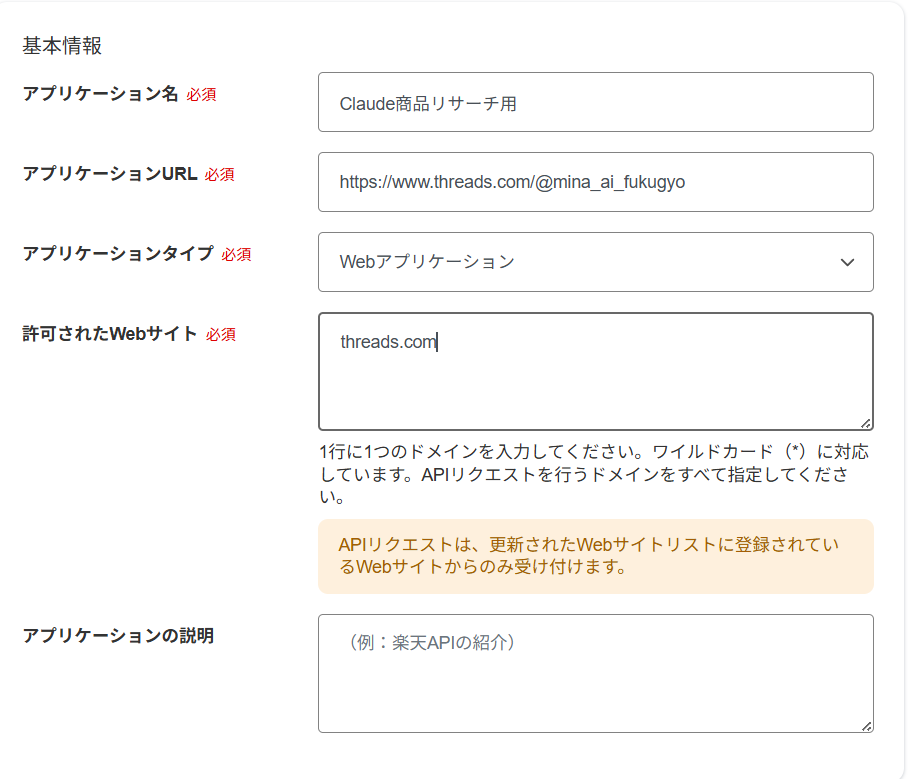
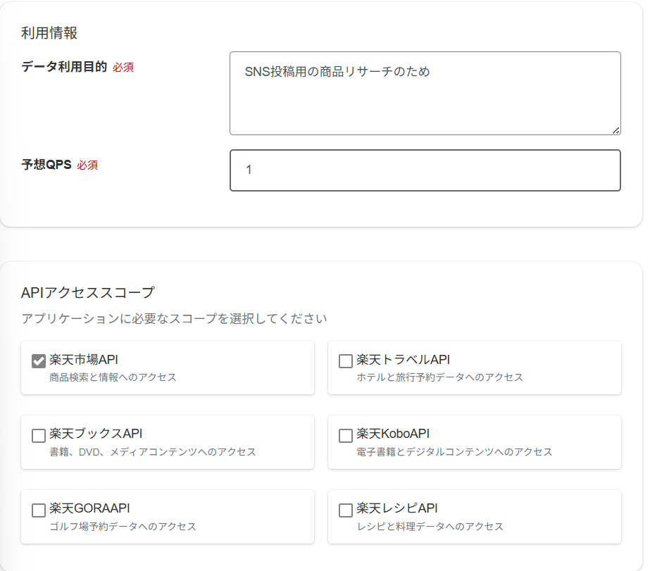

商品探しに費やす時間、もう手放しませんか？
Claude × 楽天アフィ 自動化セットアップガイド ＋コピペOKプロンプト集
＼「探す→書く→予約する」を、ひとりで頑張らない仕組み／
AI×SNSで在宅収入を叶える主婦
みな @mina_ai_fukugyo
🛍️ こんなお悩み、ありませんか？
-
😖
「楽天アフィリエイトは気になるけど、
商品を探すだけで1時間溶けてしまう…」 - 😖 「紹介文を書こうとしても、いつも同じ言い回しになって手が止まる」
- 😖 「毎回ゼロから調べ直すのが面倒で、結局続かない」
その手間、Claudeに「型」を渡すだけで丸ごと軽くなります✊
「商品を探す→紹介文を作る→投稿の準備をする」まで、
一連の流れをまとめてお願いできるようになります。
全体の流れ（ざっくり5ステップ）
難しそうに見えて、最初にやることは「IDとキーを3つ控えるだけ」。
一度整えてしまえば、次回からはClaudeへのお願いが驚くほどラクになります。
使うものを確認する
今回そろえるのは、この3つだけです。
Claude
商品リサーチ・紹介文作成・作業の指示出しに使うAI／有料プラン推奨
楽天アフィリエイト
アフィリエイトIDを取得する場所／無料
楽天ウェブサービス
商品情報を取得するためのID・キーを発行する場所／無料
ClaudeなどのAIやツールが楽天の商品データにアクセスするための"合鍵"のようなものです。
この合鍵さえ準備できれば、あとの作業はほぼClaude任せにできます。
楽天アフィリエイトIDを取得する
- ①上のリンクから公式サイトを開く
- ②楽天アカウントでログインする
- ③管理画面からアフィリエイトIDを確認する
- ④表示されたIDをコピーして、安全な場所に控えておく
このIDは、あなた経由で成果が発生したことをシステムが判別するための番号です。
あとでClaudeに"名前"だけ伝える形で使うので、メモアプリかパスワード管理ツールに保管しておきましょう。
楽天ウェブサービスでアプリIDを発行する
- ①上のリンクから公式サイトを開く
- ②楽天アカウントでログインする
- ③「アプリID発行」に進み、必要事項を入力する
- ④発行されたアプリIDをコピーして控える
「Claude商品リサーチ用」「SNS投稿自動化用」など、あとで見返したときに用途が分かる名前にしておくと管理が迷いません。
😵 「アプリID発行」フォームの早見表 ▾
📋 基本情報

↑実際の入力例はこんな感じ(みな調べ)
アプリケーション名→ 好きな名前でOK
アプリケーションURL→ 投稿するSNSの自分のプロフィールURL
例：ThreadsならThreadsの自分のプロフィールURL
アプリケーションタイプ→「Webサービス」に近い方を選ぶ
許可されたWebサイト→ 上のURLの"ドメイン"だけ入力
例：Threadsなら threads.com（枠内の文字は入力例なので消してOK）
アプリケーションの説明→ 空欄でOK
🎯 利用情報（さらに下にスクロールすると出てきます）

↑この下のAPIアクセススコープも一緒に写ってるよ
データ利用目的必須→ 一言でOK。空欄不可
例：「SNS投稿用の商品リサーチのため」
予想QPS必須→「1」でOK
1秒あたりの想定リクエスト数のこと。手動でたまにリサーチする程度なら1で十分
🔌 APIアクセススコープ（一番下のチェック欄）
APIアクセススコープ必須→「楽天市場API」だけチェックでOK
トラベル・ブックス・Kobo・ゴルフ・レシピは今回不要。旅行や本も紹介したくなったら、その時にチェックを追加すればOK
※タイプの選び方次第で、「許可されたWebサイト」が「許可されたIPアドレス」に変わることがあります。その場合は一旦「Webサイト」系の選択肢に戻すとやりやすいです。
💡 あとから管理画面でいつでも編集できます。最初から完璧を目指さなくて大丈夫◎
3つの情報を安全に管理する
ここまでで控えた3つの情報は、それぞれ役割が違います。
楽天アフィリエイトID
成果をあなたのアカウントに紐づけるための番号
アプリID
楽天の商品情報を取得するための識別キー
アクセスキー
商品情報にアクセスするための"秘密の鍵"。第三者に見せないこと
Claudeへの安全な伝え方
取得した3つの情報は、Claudeのチャット欄にそのまま貼らないのが鉄則です。
特にアクセスキーは、商品データへアクセスするための大切な鍵。AIチャットに直接入力する形で扱うのは避けましょう。
Claudeには「値そのもの」ではなく、値を安全に扱う前提での手順やコードを書いてもらいます。
実際の数字や文字列の代わりに、「RAKUTEN_APP_ID」のような"名前"だけを伝えるイメージです。
楽天アフィリエイトID／Claudeには貼らず、パスワード管理ツールや自分専用のメモに保存
アプリID／Claudeには貼らず、安全なメモに保存してツール側で設定
アクセスキー／Claudeには貼らず、環境変数や秘密情報管理ツールで保管
実際にClaudeへ最初に伝えるときは、下のプロンプトをそのままコピペでOKです。
楽天の商品データをもとに、アフィリエイトリンク入りの 紹介文を作成できる環境を整えたいです。 以下を必ず守って進めてください。 ・楽天アフィリエイトID／アプリID／アクセスキーの中身は、 この会話には書き込みません ・すべて環境変数として扱う前提で作業してください ・回答／出力／ログのどこにも秘密情報を表示しないでください ・サンプルコードでは、実際の値の代わりに必ずプレースホルダーを 使ってください これから使う変数名は次のとおりです。 ・RAKUTEN_AFFILIATE_ID ・RAKUTEN_APP_ID ・RAKUTEN_ACCESS_KEY 目指すゴール： 楽天の商品をリサーチし、アフィリエイトリンク付きの SNS投稿文を作れるようにすること

Claudeに実際にお願いする
準備が整ったら、あとはClaudeにやってほしいことをチャットで具体的に伝えるだけです。
目的別に2パターン用意したので、状況に合わせて使い分けてください。
① 紹介したい商品がすでに決まっている場合
「［商品名］」に関連する商品を楽天で探して、 紹介しやすそうなものを1つピックアップしてください。 その商品でアフィリエイトリンクを作成したうえで、 Threads用の投稿文もあわせて作ってください。 ■必ず守ること ・楽天アフィリエイトID／アプリID／アクセスキーの中身は ここに書き込みません ・認証が必要な処理は、環境変数 RAKUTEN_AFFILIATE_ID / RAKUTEN_APP_ID / RAKUTEN_ACCESS_KEY を使う前提で進めてください ・秘密情報の値は、回答・コード・投稿文のいずれにも 一切出力しないでください ・環境変数が未設定なら、貼り付けを求めるのではなく 「先に設定してください」と伝えてください ■投稿のルール ・投稿予定は明日の20時 ・煽り気味の表現は避け、誠実なトーンでまとめる ・書き出しの一文で興味を引く ・使ったことのない商品を「使ってみた」と書かない ・「#PR」または「広告」の表記を必ず入れる ・価格は変わる可能性があるため言い切らない ■まとめ方 【商品名】 【おすすめポイント】 【投稿文】 【アフィリエイトリンク】 【投稿前の確認事項】
② ジャンルだけ決めて、商品選びごと任せたい場合
楽天の「［ジャンル名］」カテゴリの中から、 SNS向けに紹介しやすい商品を3つ選んでリサーチしてください。 ■必ず守ること ・楽天アフィリエイトID／アプリID／アクセスキーの中身は ここに書き込みません ・認証が必要な処理は、環境変数 RAKUTEN_AFFILIATE_ID / RAKUTEN_APP_ID / RAKUTEN_ACCESS_KEY を使う前提で進めてください ・秘密情報は表示しないでください ■選ぶときの基準 ・初心者でも紹介しやすいこと ・悩み解決型の投稿文に落とし込めること ・レビュー数や評価を参考にすること ・アフィリエイトリンクを発行できること ・投稿文には必ず「#PR」または「広告」を入れること ■商品ごとに教えてほしいこと 1. 商品名 2. 選んだ理由 3. どんな人におすすめか 4. Threads投稿文 5. 投稿前に確認すべきこと
「美容」「家電」「キッチン」「防災」「育児」「ギフト」など、［ジャンル名］を変えるだけでいろいろな切り口に応用できます。
最初は1商品だけで試してみて、慣れてきたら②のジャンル一括リサーチで数を広げていくのがおすすめです。
なぜClaudeに任せるのがラクなのか
商品情報や条件をその都度自分で整理し直すのは、地味に一番しんどい作業です。
Claudeに「変数名」と「条件」という"型"を渡しておけば、リサーチ・選定理由・投稿文までを一括りで生成してもらえるので、あなたが手を動かすのは「確認する」ことだけになります。
続けるハードルを下げる仕組みこそが、自動化の一番の価値です。
投稿予約まで自動化したい場合
Typefullyのような予約投稿ツールを使っている場合は、Claudeで投稿文を作ったあとにそのまま予約する流れにできます。
Claudeに投稿文を作ってもらう
投稿文・リンク・広告表記を自分の目で確認する
Typefullyを開き、投稿文とリンクを貼り付ける
投稿日時を設定して、予約を確定する
リンク切れ・広告表記の抜け・不自然な表現がないかを確認してから投稿しましょう。
投稿するときの注意点まとめ
📢 広告表記
投稿内に「#PR」「広告」など、広告だと分かる表記を必ず入れる
💰 価格の書き方
価格は変動するため「執筆時点」「詳細は商品ページへ」と表現する
✍️ 体験談の書き方
使っていない商品を「使ってみた」と書かない
🔐 キーの管理
アプリID・アクセスキーはSNSや共有ページに出さない。Claudeにも直接貼らず環境変数で扱う
🔗 リンク確認
投稿前にアフィリエイトリンクが正しく開くか、自分でクリックして確認する
📋 規約確認
楽天アフィリエイト・投稿先SNSの最新ルールは定期的にチェックする
投稿前チェックリスト
まず試すならこのジャンル
美容家電
悩み解決・比較・ギフト需要
キッチン用品
便利グッズとして紹介しやすい
日用品
生活改善ネタにしやすい
防災グッズ
季節・ニュースに合わせやすい
旅行グッズ
連休・長期休み前が狙い目
育児グッズ
悩みが具体的で共感されやすい
「今の自分が気になっているもの」や「友達にすすめたいもの」から始めると、投稿文が自然に書けます。
うまくいかないときは
Q. 紹介できそうな商品が見つからない
A. 商品名ではなく、ジャンル名で依頼してみましょう
Q. 投稿文が売り込みっぽくなる
A.「自然な口コミ風に。ただし実体験の断定はしない」と指示を追加
Q. アフィリエイトリンクが正しいか不安
A. 投稿前に必ず自分でクリックして遷移先を確認する
Q. 何を紹介すればいいか迷う
A.「季節需要がある商品を3つ」と依頼してみる
Q. 文章が長くなりすぎる
A.「Threads向けに、1投稿で読み切れる長さで」と条件を足す
最後に、私から大切なお知らせ
一度こうした「型」を整えておけば、
商品リサーチも投稿文づくりも「毎回ゼロから」ではなくなります。
家事や育児の合間、ちょっとしたスキマ時間にも
コツコツ積み上げていけるのが、この仕組みの一番の魅力です。
「お家の時間を大切にしながら、無理なく育てていきたい」
そんな方にこそ向いているやり方だと思っています🌱
💡 ひとつだけ
正直にお伝えしておきたいことがあります。
物価は上がり続けているのに、使えるお金はなかなか増えません。
そのうえAIの進化で、これまでの働き方の前提そのものが変わりつつあります。
＼ あなたも、一度はこう思ったことがありませんか？ ／
「このままで、子どもにあげたい選択肢を全部あげられるかな…」
「値上げのたびにため息。
毎月の家計簿と向き合うのがしんどい…」
「在宅ワークを調べても情報が多すぎて、何を信じればいいか分からない…」
変わりたいと思いながらも、日々の忙しさに追われて
「気づけば1年、何も変わっていなかった」が
一番もったいないパターンです。
💔 実は私も、遠回りだらけでした
独学のまま副業を始め、
150万円ものお金を失う失敗を経験しています。
「自分には向いていないのかも」と落ち込み、
子どもの何気ない甘えにも笑顔で応えられない日が続いて、
一人で夜中に泣いたこともありました。
✨ 遠回りの末にたどり着いた「答え」
失敗と試行錯誤を重ねてようやく見えてきたのが、
未経験の主婦でも遠回りせずに進める
「お家で稼ぐ力を育てるロードマップ」でした。
私と今のあなたを分けているのは、才能ではありません。
「正しい順番を知って、
一歩を踏み出したかどうか」
本当に、ただそれだけの差でした。
時間を切り売りする働き方ではなく、
「AIとSNS」を賢く味方につけて
長く家庭を支えられる収入源を育てていく。
それが、自分と家族を守るいちばん現実的な選択だと思っています。
『AIマネタイズの教科書』
公式LINEにお友だち登録していただいた方限定で
無料プレゼント中🎁
📖 教科書の中身を少しだけご紹介！
第一章: いま一番始めやすいAIマネタイズ手法
第二章: ChatGPT収益化プロンプト
第三章: AIマネタイズ神テンプレート
第四章: マネタイズのための生成AIツール3選
第五章: AI×SNSで収益を生むリアル事例
150万円の失敗を経てようやくたどり着いた、
「主婦が在宅で本当に成果を出せる現実的なロードマップ」をこの一冊に詰め込みました。
希望者限定『AI収益化サポート会』の実施
LINE読者様限定で、お家で安全に進められる特別なサポート会をご案内しています🌱
※配布は期間限定となります。お早めにお受け取りください